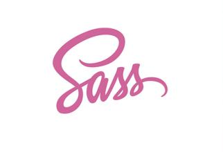
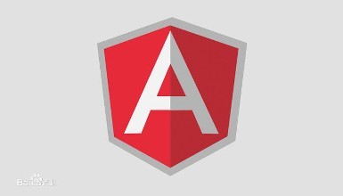

-
规范
内容:HTML4、HTML5、ES5、ES6、W3C、C2、C3、CommonJS、CMD、AMD等
程度:了解 时长:2年
-
框架
内容:Jquery、Bootstrap、Express、Zepto、AngularJs、Recat、Avalon等等
程度:熟悉 时长:2年
-
UI框架
Jqueryeasyui、Mui、Yo、Ionic等
程度:熟悉 时长:1年
-
类库
Swiper、Iscroll等
程度:熟悉 时长:1年
-
插件
Jquery menu plugin、Jquery nav plugin、zepto emoji-expression-plugin
程度:熟悉 时长:1年
-

布局
Fixed、Fulid、Flex、Responsive、SASS
程度:精通 时长:2年
-

程序
Javascript原生、Jquery及Zepto插件、AngularJs等
程度:精通 时长:1年
-
数据库
掌握Websql、mongodb、indexeddb等
程度:熟悉 时长:2年
-
后台
熟悉后台开发的数据库相关内容、PHP、Nodejs
程度:熟悉 时长:2年
-
工具
sublime、gulp、webpack、fekit
程度:熟悉 时长:2年
-
辅助软件
xMind、PS、Axure等
程度:熟悉 时长:2年


2011年至2015年间在四川理工学院深造学习
在校期间所修学科为计算机科学与技术，学习了大量的有关编程的知识包括C,C++,C#,JAVA,数据库、汇编、linux系统编程等等
2015年至2017年间在宏图物流公司工作
本人在该公司工作期间任职职位为前端开发应用工程师，该公司文化气息浓厚，同事间团结友爱，互帮互助,个人的专业的能力也得到了很大提升
这是一个电商购物平台，在该项目中我主要负责了主页模块，商品详情模块，登录注册模块，商品列表模块，购物车模块的编写与维护

这是一个首页页面，用到的技术有templates模板引擎，ajax请求，轮播图等等

这是一个商品里列表页面，采用固定布局方式，用到原生js,模板引擎templates和异步请求，jquery，cookies和load加载等等

这是登录页面，背景采用淡入淡出式轮播,客户端post提交表单验证，服务端作判断

业余空闲时学学知识，这是采用angularjs模块开发做的后台练习,用bootstrap，ng-grid布局，用路由控制页面跳转用anjular实现数据双向绑定，filter过滤筛选
- 姓名:向丽
- 性别女
- 年龄:23
- 生肖:狗
- 高中:桂花中学
- 大学:四川理工学院
- 专业:计算机学院计算机科学与技术
- 所修学科:c,c++,c#,mysql,os,数据机构，计算机组成与原理，程序设计，软件工程，数据库系统
- 专业兴趣技能前端应用开发，H4，H5，C2，C3，JS，jquery,angular,nodejs,bootstrap,mui,ionic等
- 业余兴趣爱好旅游，追剧，唱歌
- 扫一扫联系我